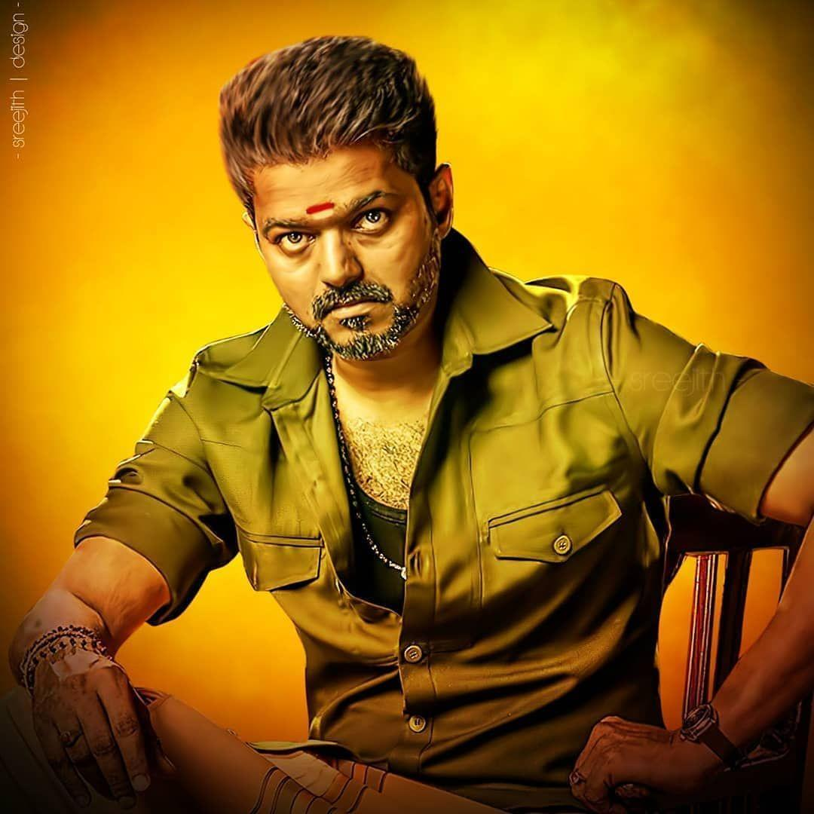

A leading Tamil film actor known for his charismatic screen presence and mass appeal, Vijay has starred in numerous blockbusters and is fondly called "Thalapathy" by his fans.

`
AJITH
Known as "Thala," Ajith is a celebrated Tamil actor with a vast fan base, renowned for his versatility and commitment to his roles in both commercial and critically acclaimed films.
ALWAYS THALA
Ajith Kumar, a prominent Tamil actor, has had an inspiring and eventful life journey, filled with challenges and triumphs that extend beyond his film career. Here are some notable true incidents from his life:
1. **Early Struggles and Career Beginnings**: Ajith started his career in modeling and pursued acting despite facing significant setbacks. He worked as a mechanic and in a textile company to support himself. His early films didn’t perform well, but he persevered through financial and personal difficulties.
2. **Accidents and Surgeries**: Ajith has faced multiple injuries throughout his life. A serious spinal injury from a motorcycle accident forced him to undergo multiple surgeries. Despite being advised against it, he continues to pursue his passion for racing and performing stunts, showing his resilience and determination.
3. **Personal Life and Marriage**: Ajith met actress Shalini while filming *Amarkalam* (1999). Their on-screen chemistry turned into a real-life relationship, and they married in 2000. Their relationship has been admired for its stability in an industry where such marriages are often challenging.
4. **Passion for Racing**: Apart from acting, Ajith is passionate about car and motorcycle racing. He has participated in international racing competitions, including Formula 2 and Formula BMW Asia. His love for racing is well-known, and he has juggled this passion alongside his acting career, despite the risks involved.
5. **Overcoming Personal Loss**: Ajith faced significant personal tragedies, including the loss of his father in 2023 and his brother in 2017. Despite these painful experiences, Ajith has remained strong and private about his grief, continuing to focus on his career and family.
6. **Philanthropy and Low-Key Nature**: Ajith is known for his charitable activities, though he rarely publicizes them. He prefers to stay out of the limelight regarding his social work, which includes helping those in need and supporting causes without seeking attention.
Ajith’s life reflects his resilience, determination, and passion, making him not just a star in cinema but a source of inspiration for many.
DHANUSH
An acclaimed Tamil actor and producer, Dhanush is recognized for his exceptional acting skills and versatility, gaining international fame with his song "Why This Kolaveri Di" and roles in various genres.